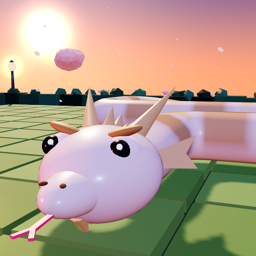

LadonSoporte
¿Necesitas ayuda?
Escribe a appsupport@mariusvandam.com. Si algo no funciona, indica el modelo de tu iPhone o iPad y su versión de iOS.
¿Cómo dirijo al dragón?
Desliza hacia donde quieras ir. Desliza en sentido contrario para dar un giro cerrado. Con un teclado, diriges con las flechas o WASD.
¿Qué hacen las manzanas de oro, los combos y las flechas?
- Una manzana de oro vale 50 puntos y te rejuvenece: tres segmentos menos. Desaparece a los 7,5 segundos.
- Vuelve a comer en menos de cuatro segundos para hacer un combo: tus puntos valen ×2, ×3, hasta ×5.
- Cada cuatro frutas cae del cielo una flecha de Heracles que se queda clavada en el campo. Un brillo naranja te avisa antes.
¿Cómo miro alrededor o dejo la cámara fija?
- En la pantalla de título, desliza hacia los lados para girar la cámara alrededor de la isla. Desliza hacia arriba o abajo para bajarla o subirla.
- Durante una partida, toca el botón de la cámara abajo a la derecha. La imagen se queda quieta. Tócalo otra vez para que vuelva a moverse.
- Si tienes activado «Reducir movimiento» en tu dispositivo, la cámara está fija desde el principio.
No oigo ningún sonido
Durante una partida, revisa el botón de sonido abajo a la derecha y el volumen de tu dispositivo.
No veo el botón Clasificación ni las constelaciones de otros jugadores
Aparecen en cuanto inicias sesión en Game Center: Ajustes → Game Center.